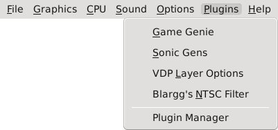

The Plugins Menu allows you to access functionality provided by available MDP plugins. You can also access the Plugin Manager to view what plugins were found and what plugins could not be loaded due to compatibility issues, if any.
Plugin Manager: View all internal and external plugins currently loaded, as well as plugins that failed to load for some reason.